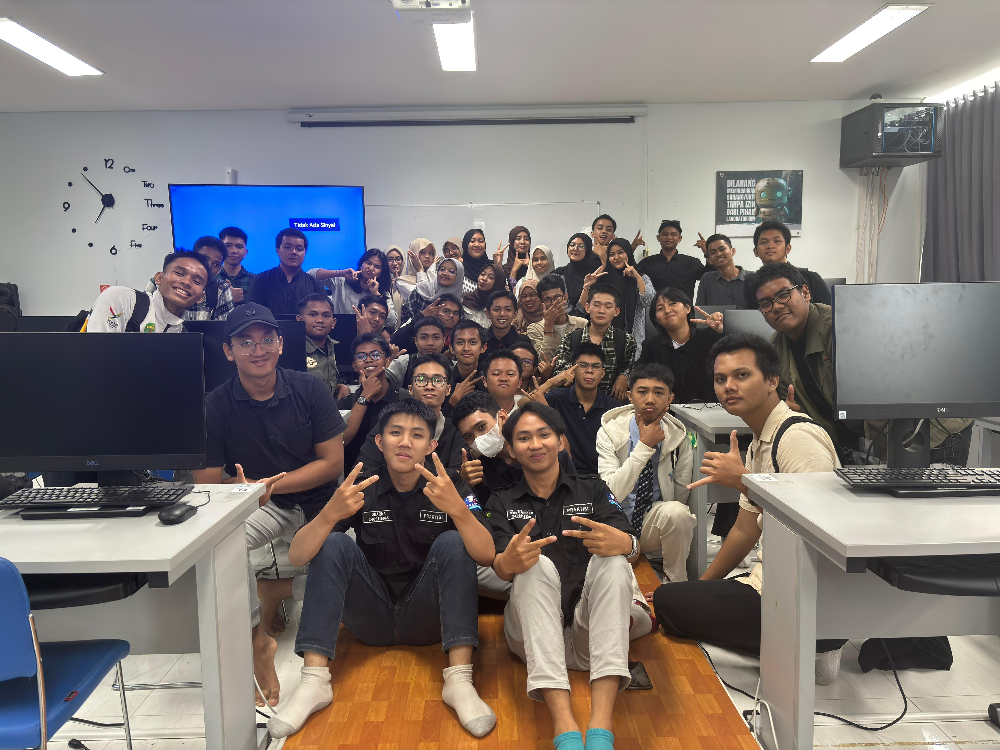
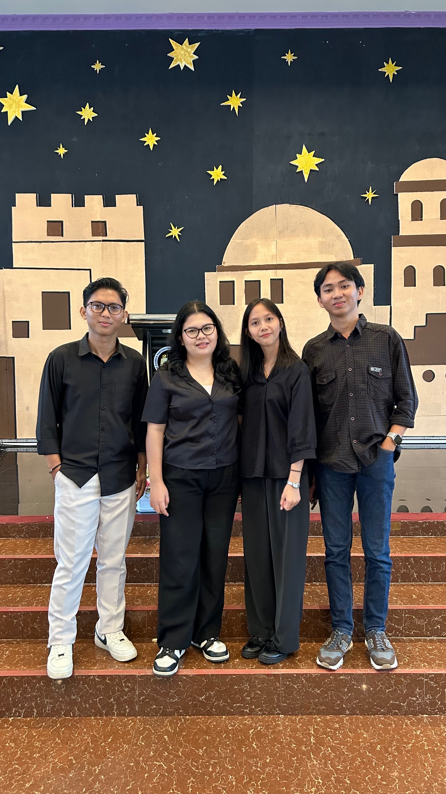
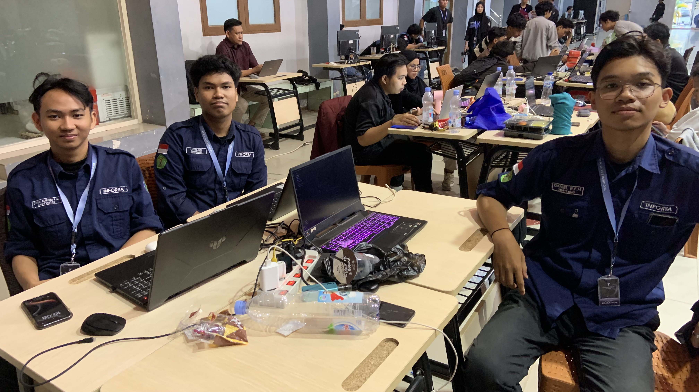
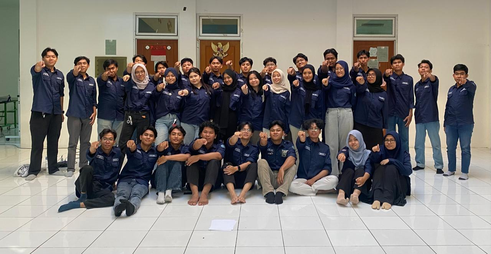

Pengalaman
Asisten Laboratorium
Dasar-Dasar Pemograman & Analitik Visualisasi Data| Agu 2025 - Sekarang
Membantu mahasiswa memahami logika pemrograman dasar dan analisis data serta teknik visualisasi data secara efektif.
Full Stack Developer
Gereja GPSI Filadelfia Samarinda| Feb 2025 - Sekarang
Berkolaborasi dalam tim untuk merancang dan mengembangkan website resmi Gereja GPSI Filadelfia Samarinda guna memudahkan penyebaran informasi gereja.
Volunteer Information Technology Speaker
Information System Association (INFORSA)| Sep 2025 - Nov 2025
Berkontribusi dalam program kerja Goes To School, Departemen Relations and Community Services untuk memberikan edukasi, materi, serta motivasi dalam dunia IT ke berbagai SMA & SMK di Samarinda.
/ProkerInforsa.JPG)
Peserta Hackathon TechnoFest IT v 2.25
Universitas Muhammadiyah Kalimantan Timur| Jun 2025
Sebagai peserta lomba Hackathon TechnoFest IT v 2.25 di Kalimantan Timur, membuat aplikasi yang inklusif & berkelanjutan.
Staff Professional Skill Development - Scientfic and Expertise Division
Information System Association (INFORSA)s| Des 2024 - Des 2025
Bergabung pada kepengurusan Information System Association 2024-2025 pada departemen Professional Skill Development, divisi Scientfic and Expertise Division
IT Operations & Business Support Intern
Magang PLN Icon Plus| Jul 2023 - Des 2023
Terlibat dalam pemeliharaan operasional IT dan mendukung kebutuhan teknis bisnis harian perusahaan.
/magangpln.jpg)
Keahlian
Sertifikat & Penghargaan
{{ cert.Judul }}
{{ cert.Tahun }}
{{ cert.Penerbit }}